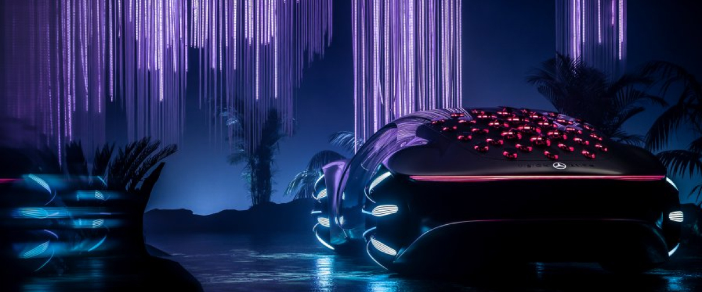

The VISION AVTR
Inspered by the future

concept
Електромобільність у гармонії з людиною та природою. Екологічна технологія органічних акумуляторів та продумана операційна стратегія концепт-кара VISION AVTR.

Inspered by the future
Електромобільність у гармонії з людиною та природою. Екологічна технологія органічних акумуляторів та продумана операційна стратегія концепт-кара VISION AVTR.
